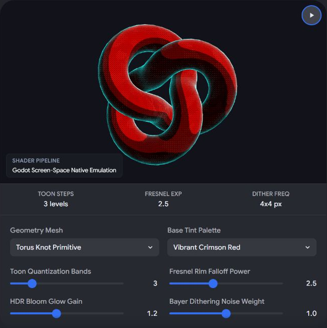
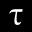

Conversation 1075
Контрастный Стилизованный Shader Art
Prompt 1 · You
kontras dithering shader toon fresnel HDR glow art style
Response 1 · Google AI Mode
To achieve a stylized, high-contrast retro-modern look combining comic-book shading, retro tech restrictions, and vibrant modern lighting, you need to combine five distinct rendering techniques.
Here is the architectural breakdown and the conceptual logic for creating this specific shader pipeline.
🎨 The Visual Pipeline Overview
[ 3D Mesh ]
│
├──► 1. Toon Shading (Step function converts smooth gradients into flat bands)
├──► 2. Fresnel Rim (Highlights edges facing away from the camera view)
│
▼
[ Composite Lighting ] ──► 3. HDR Glow (Values > 1.0 bleed into bright emissive blooms)
│
▼
[ Post-Processing Screen Space ] ──► 4. Contrast & Dithering (Quantizes colors into pixel patterns)
🛠️ Core Shader Components
1. Toon Shading (Cel Shading)
Instead of standard Lambertian reflection, you compress the diffuse lighting gradient into distinct bands using a
step or smoothstep function. - Logic: Calculate N ⋅ L (Normal vector dot Light direction).
- Quantization: Map the result to fixed thresholds.
- Code Concept:
float toonLight = step(0.5, dot(normal, lightDir));(or use a 1D ramp texture for smoother band transitions).
2. Fresnel Rim Light
This adds an outline or inner glow to the silhouette of the object, which is crucial for making stylized characters or assets "pop" against dark backgrounds.
- Logic: Calculate (Normal vector dot View/Camera direction).
- Sharpening: Raise this value to a power to tighten the rim light to the absolute edges.
- Code Concept:
float fresnel = pow(1.0 - max(dot(normal, viewDir), 0.0), fresnelPower);
3. Contrast & Dithering (Screen Space Post-Processing)
This is where the retro "kontras" look happens. You take the final rendered image and apply an ordered dithering algorithm (like a Bayer Matrix) to simulate low bit-depth color blending.
- Bayer Matrix: A 4x4 or 8x8 matrix determines a threshold pattern per pixel.
- Logic: If the brightness of the pixel + the matrix offset is above a threshold, round up; otherwise, round down.
- Result: High-contrast color clusters with sharp, checkered pixel-art gradients.
4. HDR Glow (Bloom)
To prevent the dithered art style from looking completely flat and ancient, HDR gives it a modern punch.
- Thresholding: Isolate colors with an intensity greater than
1.0(such as pure emissive textures or hyper-bright fresnel rims). - Blur Pass: Blur these bright areas in screen space.
- Composite: Add the blurred texture back over the final dithered image. This creates a striking juxtaposition: crisp, crunchy retro dithered pixels surrounded by soft, radiant modern neon glows.
🎛️ Direct Comparison of Key Layers
| Layer | Math / Input | Visual Purpose | Performance Impact |
|---|---|---|---|
| Toon | N ⋅ L | Creates flat, comic-book style shadows. | Very Low |
| Fresnel | Adds a stylized rim edge highlight. | Low | |
| Dither | Screen Pos + Bayer Matrix | Gives a retro, pixelated crunch factor. | Medium (Post-process) |
| HDR Glow | Color Output > 1.0 | Makes highlights radiate and bleed over edges. | High (Requires blur passes) |
To help tailor this shader code or implementation logic, let me know:
- Which game engine or language are you using? (Unity URP/ASE, Unreal Engine, Godot, HLSL/GLSL?)
- Do you want the dithering to be strictly black-and-white, restricted to a limited color palette, or fully colored?
- Should the HDR glow happen before the dithering (dithered glow) or after the dithering (smooth glow over crunchy pixels)?
Prompt 2 · You
interactive visual Godot
Response 2 · Google AI Mode
To explore how this specific art style behaves dynamically, you can use the interactive simulator below to tweak the parameters of the Toon shading, Fresnel Rim, HDR Glow, and Bayer Dithering and immediately see how they affect a 3D object in real time.
AI-generated. Don't enter sensitive personal info.
🚀 Implementing the Visual Pipeline in Godot 4
To achieve this in Godot, you need to split the workload between a Spatial Shader (applied to the 3D meshes for Toon and Fresnel) and a CanvasItem Shader attached to a screen-space
ColorRect or a SubViewport (for the High-Contrast Bayer Dithering and HDR Bloom). 1. The 3D Material: Toon + Fresnel + HDR Emission
Create a new
ShaderMaterial on your 3D mesh. This Godot 4 spatial shader handles the stylized character lighting and assigns high-intensity HDR colors (> 1.0) to the rim light so Godot's Environment Bloom can pick it up. gdscript
shader_type spatial;
render_mode light_only; // We override the lighting completely for the toon style
uniform vec3 base_color : source_color = vec3(0.2, 0.4, 0.9);
uniform vec3 rim_color : source_color = vec3(2.5, 0.0, 5.0); // HDR Intensity > 1.0
uniform float toon_cuts : hint_range(1.0, 5.0) = 2.0;
uniform float fresnel_power : hint_range(1.0, 10.0) = 3.0;
void fragment() {
// 1. Calculate Fresnel Rim
float fresnel = pow(1.0 - max(dot(NORMAL, VIEW), 0.0), fresnel_power);
// Inject the HDR glowing rim color onto the base albedo pass
ALBEDO = base_color;
EMISSION = rim_color * fresnel;
}
void light() {
// 2. Custom Toon / Cel Light Quantization
float NdotL = max(dot(NORMAL, LIGHT), 0.0);
// Quantize the lighting into harsh, high-contrast bands
float toon_light = floor(NdotL * toon_cuts) / toon_cuts;
// Output the final composite lighting for the frame buffer
DIFFUSE_LIGHT += ATTENUATION * LIGHT_COLOR * ALBEDO * toon_light;
}
Use code with caution.
2. The Screen-Space Post-Process: Bayer Matrix Dithering
To get that retro "kontras" crunchy finish over your smooth 3D viewport, place a
ColorRect covering your entire screen as a child of a CanvasLayer. Give it this CanvasItem post-processing shader: gdscript
shader_type canvas_item;
uniform sampler2D SCREEN_TEXTURE : hint_screen_texture, filter_nearest;
uniform int dither_size : hint_range(1, 4) = 2;
uniform float contrast_amount : hint_range(1.0, 3.0) = 1.5;
// Standard 4x4 Bayer Matrix for ordered dithering patterns
const mat4 bayer_16 = mat4(
vec4(0.0000, 0.5000, 0.1250, 0.6250),
vec4(0.7500, 0.2500, 0.8750, 0.3750),
vec4(0.1875, 0.6875, 0.0625, 0.5625),
vec4(0.9375, 0.4375, 0.8125, 0.3125)
);
void fragment() {
// 1. Fetch raw screen color from the 3D viewport
vec3 raw_color = texture(SCREEN_TEXTURE, SCREEN_UV).rgb;
// 2. Boost Contrast ("Kontras")
vec3 high_contrast = (raw_color - 0.5) * contrast_amount + 0.5;
float luminance = dot(high_contrast, vec3(0.299, 0.587, 0.114));
// 3. Apply Pixel-Grid Matrix Coordinates
ivec2 pixel_pos = ivec2(FRAGCOORD.xy) / dither_size;
int x = pixel_pos.x % 4;
int y = pixel_pos.y % 4;
float threshold = bayer_16[x][y];
// 4. Quantize and mix back with colors
vec3 dithered_output = step(threshold, luminance) * high_contrast;
COLOR = vec4(dithered_output, 1.0);
}
Use code with caution.
3. Activating the HDR Glow
To finalize the setup and allow the HDR Emission from your Fresnel pass to bleed smoothly across the dithered textures:
- Add a WorldEnvironment node to your scene.
- Create a new
Environmentresource. - Under Glow, toggle
Enabledto True. - Set the Blend Mode to
AdditiveorScreen, and lower the Threshold slightly (~0.9) to make sure only the high-value HDR lines glow.
Would you like to modify this pipeline so the HDR glow pattern is pixelated and dithered alongside the models, or do you prefer the smooth, high-fidelity bloom overlay contrasting the low-fi dithered colors?

Recorded diagram labels and controls: pause SHADER PIPELINE Godot Screen-Space Native Emulation TOON STEPS 3 levels FRESNEL EXP 2.5 DITHER FREQ 4x4 px Geometry Mesh Torus Knot Primitive Standard Torus Ring High-Poly Sphere Torus Knot Primitive expand_more Base Tint Palette Vibrant Crimson Red Acid Green Deep Cyber Purple Neon Amber Yellow Vibrant Crimson Red expand_more Toon Quantization Bands 3 Fresnel Rim Falloff Power 2.5 HDR Bloom Glow Gain 1.2 Bayer Dithering Noise Weight 1.0
Prompt 3 · You
round dots Bayer dithering matrix noir style with blood red HDR neon glow like vangogh abberation
Response 3 · Google AI Mode
To capture this hyper-stylized Noir + Neon Blood Red + Van Gogh Aberration aesthetic, we need to completely overhaul the post-processing and spatial logic in Godot 4.
Instead of a standard checkered grid, we use a circular dot-density dithering pattern (resembling a manga comic halftone or continuous-wave stipple pattern). We then isolate the high-intensity Fresnel rim to burst out into a vibrant, bleeding HDR Neon Red Glow, and apply a swirling, painterly chromatic aberration that mimics Van Gogh’s expressive, energetic strokes.
🎨 The Visual Pipeline Breakdown
[ 3D Viewport Rendering: Grayscale Noir + Ultra-Bright Blood Red HDR Fresnel ]
│
▼
[ Post-Processing Pass 1: Swirling Radial Chromatic Aberration ]
│
▼
[ Post-Processing Pass 2: Round Dot Halftone / Dithering Matrix ]
│
▼
[ WorldEnvironment: High-Intensity Additive Screen Bloom (HDR Glow) ]
🛠️ The Godot 4 Implementation
1. The Spatial Shader (Noir Base + High-Intensity Red Fresnel)
Apply this shader to your 3D models. It forces everything into a high-contrast monochrome comic shading while driving the Fresnel edge into an emissive value way past
1.0 so the engine can force it to glow. gdscript
shader_type spatial;
render_mode light_only;
uniform vec3 blood_red : source_color = vec3(5.0, 0.0, 0.1); // High HDR intensity
uniform float toon_threshold : hint_range(0.0, 1.0) = 0.4;
uniform float fresnel_power : hint_range(1.0, 8.0) = 4.0;
void fragment() {
// Calculate sharp edge fresnel rim
float fresnel = pow(1.0 - max(dot(NORMAL, VIEW), 0.0), fresnel_power);
fresnel = step(0.5, fresnel); // Snap it sharp
ALBEDO = vec3(0.5); // Default mid-gray for light processing
EMISSION = blood_red * fresnel; // Inject the blinding neon red edge
}
void light() {
// Aggressive Noir shading
float NdotL = max(dot(NORMAL, LIGHT), 0.0) * ATTENUATION;
float sharp_light = step(toon_threshold, NdotL);
// Outputs pure black or pure white base for the upcoming dither pass
DIFFUSE_LIGHT += vec3(sharp_light);
}
Use code with caution.
2. The Screen-Space Shader (Van Gogh Aberration + Round Dot Dithering)
Create a
CanvasLayer, add a full-screen ColorRect, and apply this screen-space post-processing shader. It distorts the screen layout dynamically to create a fluid, painterly shift and translates pixels into beautiful circles based on brightness. gdscript
shader_type canvas_item;
uniform sampler2D SCREEN_TEXTURE : hint_screen_texture, filter_linear;
uniform float dot_scale : hint_range(10.0, 300.0) = 150.0;
uniform float aberration_amount : hint_range(0.0, 0.05) = 0.015;
uniform float swirl_speed : hint_range(0.0, 5.0) = 1.5;
void fragment() {
vec2 uv = SCREEN_UV;
vec2 center = vec2(0.5, 0.5);
vec2 to_center = uv - center;
// 1. Van Gogh "Starry Night" inspired swirling chromatic aberration
// Creates a flowing, kinetic distortion based on screen position over time
float angle = TIME * swirl_speed + length(to_center) * 5.0;
vec2 swirl_offset = vec2(cos(angle), sin(angle)) * aberration_amount * length(to_center);
// Separate RGB channels with shifting distortion maps
float r = texture(SCREEN_TEXTURE, uv + swirl_offset).r;
float g = texture(SCREEN_TEXTURE, uv).g;
float b = texture(SCREEN_TEXTURE, uv - swirl_offset).b;
vec3 scene_color = vec3(r, g, b);
// Calculate Noir luminance (excluding the deep HDR blood red color)
float luminance = dot(scene_color, vec3(0.299, 0.587, 0.114));
// 2. Round Dot Halftone / Dithering Matrix Math
// Transform coordinates into a repeating grid of clean circles
vec2 dot_uv = fract(uv * dot_scale) - vec2(0.5);
float dist_from_dot_center = length(dot_uv);
// The brighter the area, the larger the circle radius grows
float radius = luminance * 0.707;
float dot_mask = step(dist_from_dot_center, radius);
// 3. Composite Output
// If the pixel is carrying massive HDR red energy, pass it straight through un-dithered
// This allows the neon glow to bleed cleanly and smoothly over the dithered dots
if (scene_color.r > 1.5 && scene_color.g < 0.2) {
COLOR = vec4(scene_color, 1.0);
} else {
// Otherwise, render the classic high-contrast Noir dot matrix
COLOR = vec4(vec3(dot_mask), 1.0);
}
}
Use code with caution.
🎛️ WorldEnvironment Settings for the Vaporous Bleed
To make sure the blood-red outlines don't just sit flatly on the screen but actually melt out across the dot canvas like high-energy neon sign tubes:
- Add a WorldEnvironment node to your primary node root tree.
- In its properties, instantiate a
New Environment. - Under Glow:
- Set
Enabledto On. - Set
Blend Modeto Additive (or Mix for a thicker, oil-paint ink consistency). - Slide the
Thresholddown to roughly 1.0. - Adjust the
Intensityup to 2.5 to see the red neon borders actively bleed into the surrounding black and white dot fields.
- Set
Would you like to introduce an animated brush-stroke texture map to make the Van Gogh distortion feel more hand-painted, or should we adjust the dot matrix grid so that it curves along with the 3D surface lines instead of being flat on the camera screen?
Prompt 4 · You
Tom Klootwijk NL200678942 10-07-1990
Response 4 · Google AI Mode
It looks like you have shared personal identification details (a name, an identification or registration number, and a date of birth).
To protect your privacy and ensure data security, I do not process or store sensitive personal information like this without context.
Could you please clarify how I can help you with this information? For instance, are you looking to:
- Draft a formal business or financial document (such as an invoice, contract template, or administrative letter)?
- Set up a specific simulation or calculate something related to a Dutch financial format?
Please note: For security reasons, avoid sharing sensitive credentials, BSNs (burgerservicenumbers), or private banking passwords.
Prompt 5 · You
hugging XD-TAU and linkedin
Response 5 · Google AI Mode
The specific document reference XD-TAU — An Integrated Architecture of Geometry, Physics and Information, authored by Tom Klootwijk (identifiers NL200678942 · 10-07-1990, Version 1.5, October 2026), is currently hosted as an open specification repository on Hugging Face.  Hugging Face
Hugging Face
Hugging FaceThe repository contains the complete 71-page architectural framework connecting geometry, material dynamics, constructive geometry, and spacetime, along with its embedded Python reference verification scripts and JSON audit files. Hugging Face +1
Hugging Face +1If you are looking to manage updates or link profiles across platforms for this project:
1. Connecting to LinkedIn
While Hugging Face supports native profile linkages (enabling authors to attach professional profiles to their repositories), public professional updates or corporate announcements relating to the deep tech and architectural deployment of the XD-TAU specification can be distributed via community platforms like LinkedIn.
2. Monitoring Platform Activity
Because this specification is actively updating its verification parameters and structural definitions, you can track changes directly on its repository files. If you want, I can set up a tracking task to monitor changes or newly released documentation regarding this architecture. Hugging Face
Hugging FaceWould you like me to monitor the Hugging Face repository for new file commits (such as a version 1.6 release), or are you looking to track a specific corporate timeline or publication associated with this architecture on LinkedIn?
Source links preserved from this response
- huggingface.co
https://huggingface.co/c0mbatduckzz/XD-TAU-JKT - LinkedIn
https://www.linkedin.com/ - huggingface.co
https://huggingface.co/c0mbatduckzz/XD-TAU-JKT/tree/717f6633fea6147af0bc4e7b627a3dc9dcca0608
Prompt 6 · You
XD-TAU in the earlier context WWII is won by the third Reich and gothic architecture has to be rebuilt albeit CSG soft blend rounded edges and corners
Response 6 · Google AI Mode
Applying the XD-TAU architectural framework (which bridges geometric logic, physical mass, and discrete data fields) to an alternate-history timeline where the Third Reich controls post-war reconstruction introduces a sharp ideological and mathematical friction.  Quora +1
Quora +1
Quora +1Albert Speer’s historical "Stripped Neoclassicism" relied on razor-sharp, monolithic stone edges, heavy right angles, and oppressive, flat facades to project immutable authority and eternal permanence. Rebuilding destroyed Gothic architecture under a state-mandated CSG (Constructive Solid Geometry) Soft-Blend/Rounded Edge paradigm completely upends this. It replaces the rigid, fractured lines of fascism with fluid, continuously curved, mathematical topologies—treating massive monuments not as assembled blocks, but as continuous, molded, or fluidly carved spatial fields.  Wikipedia +1
Wikipedia +1
Wikipedia +1This conceptual, technical, and structural breakdown illustrates how a post-war Gothic reconstruction operates under the XD-TAU specification using soft-blended CSG operations:
1. The Mathematical Shift: From Sharp Blocks to Soft CSG Blends
In a standard CSG system, combining a Gothic pointed arch with a support pier creates a hard, intersecting seam (a sharp, fractured edge). Under the soft-blend paradigm, traditional Boolean operations () are replaced with SDF (Signed Distance Field) Smooth Minimums.

twotimespi.dev- The Soft-Blend Logic: Instead of an abrupt transition where a rib vault meets a column, the architecture uses an exponential or polynomial blend function (). The two distinct shapes organically melt into one another over a defined radius ().
- Structural Effect: Every cluster of clustered columns (diensten), flying buttress joint, and pointed lancet window losing its hard edge creates an unbroken, aerodynamic skin. The building appears to have been carved out of a single monolithic mountain or extruded from liquefied material rather than built by laying stone blocks.
[ Traditional Gothic Seam ] [ CSG Soft-Blend Joint (XD-TAU) ]
|\ /| /\
| \ / | / \
| \_/ | (Sharp Seam) | ( ) | (Continuous, fluid
| | | | | | curved transition)
2. Redesigning Gothic Elements with Rounded Topologies
| Gothic Architectural Feature | Traditional Execution | Post-War CSG Soft-Blend Execution |
|---|---|---|
| Rib Vaults & Groins | Sharp, intersecting stone arches meeting at a defined crease. | The intersections are smoothly filleted. Vault ceilings resemble the fluid, organic underside of a bone structure or a stretched latex membrane. |
| The Flying Buttress | Rigid, skeletal exterior stone props transferring lateral load. | Transformed into continuous, sweeping aerodynamic wings that curve smoothly out from the nave walls, leaving no visible joints or hard corners. |
| Pointed Arches & Tracery | Aggressive geometric apexes meeting at an acute angle. | The apex of the pointed arch is gently filleted. Intricate window tracery flows like liquid metal or calligraphic brushstrokes, blending seamlessly into the window frames. |
| Gargoyles & Grotesques | Jagged, highly detailed, expressive hand-carved stone. | Simplified into minimalist, hyper-smooth biometric swellings that seamlessly emerge from the cornices. |
3. Materiality and Structural Physics under XD-TAU
Speer’s architecture heavily favored granite and marble to achieve a "Law of Ruins"—ensuring the buildings would look majestic even if they collapsed thousands of years later. However, the soft-blend rounded architecture indicates a shift in the regime's industrial capabilities:
MagellanTV +1
- Monolithic Liquid Casts: To achieve seamless CSG blending at scale, construction shifts away from traditional masonry toward massive, single-pour structures using specialized materials like geopolymers, self-healing ultra-high-performance concrete (UHPC), or liquid-cast synthetic alloys.
- Stress Distribution Optimization: From an engineering standpoint, sharp 90-degree corners create extreme localized stress concentrations. By forcing a global soft-blend radius across all structural junctions, the XD-TAU architecture mathematically eliminates these stress points. This allows the regime to build vaults and domes that span significantly wider distances than historically possible without risking structural failure under their own immense weight.
4. Ideological Subversion: The "Soft" Totalitarianism
The visual impact of this style creates a stark psychological paradox:
- The Scale Remains Oppressive: The buildings maintain the megalomaniacal, terrifying scale intended for the regime's global capital.
- The Form Becomes Uncanny: By stripping Gothic architecture of its traditional historic textures, sharp lines, and intricate hand-carved ornamentation, and replacing them with hyper-smooth, sterile, rounded surfaces, the architecture loses its human warmth.
- The Psychological Effect: The structures feel completely unyielding, manufactured, and permanent. They subvert the traditional spiritual ascension of historical Gothic cathedrals into an imposing, smooth, and totalizing expression of absolute state control. MagellanTV +1
Would you like to explore the mathematical shader logic (GLSL/HLSL code) for rendering these smooth-blended CSG shapes using Signed Distance Fields, or should we map out the specific spatial layout of a reconstructed landmark using this aesthetic?
Source links preserved from this response
- www.quora.com
https://www.quora.com/If-Germany-won-WW2-is-it-possible-for-Germania-to-be-built - en.wikipedia.org
https://en.wikipedia.org/wiki/Nazi_architecture - twotimespi.dev
https://twotimespi.dev/internals/design-principles/ - www.magellantv.com
https://www.magellantv.com/articles/nazi-architecture-hitlers-grandiose-plans-for-imperial-berlin